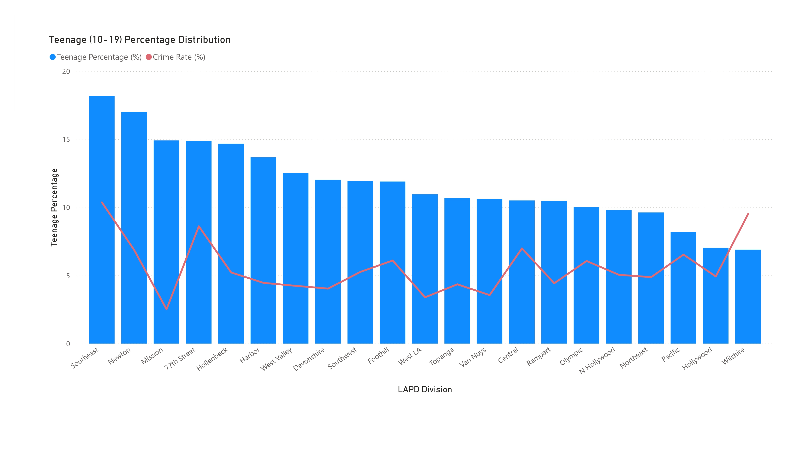

This report examines the relationship between various demographic factors and crime rates across different regions in Los Angeles with the data acquired in 2020. The crime data was acquired from DATA.GOV while the population data was collected from Los Angeles Geohub
In this analysis age and poverty are the 2 focused demographic variables. Data are visualized using various visualization techniques and analyzed by linear regression.
Key Findings
Moderate correlation (R² = 0.42) between the proportion of black people in poverty and crime rates, suggesting that areas with higher populations of Black people in poverty tend to experience more crime.
Weak correlation (R² = 0.20) between the proportion of people in poverty and crime rates, suggesting that areas with higher populations of people in poverty tend to experience more crime.
Weak correlation (R² = 0.19) between the proportion of elderly (65+) and crime rates, suggesting that areas with higher populations of elderly tend to experience more crime.
Page 1 of 10
Crime in Los Angeles
This section explores crimes in Los Angeles in variuos perspectives.
Crime rate is the dependent variable in this study. It is calculated by Number of Crimes in a District / Total population in a District. Below is a heat map indication the level of crime rate with respect to the geographic location group by LAPD.
Page 2 of 10
Population Distributions
Population Distribution Grouped by Combined Statistic Area (CSA)
Combined Statistical Area (CSA) in the United States is a geographic region comprising multiple adjacent metropolitan and micropolitan areas with strong economic and social ties, as designated by the Office of Management and Budget (OMB). The below data shows the population distributions in LA grouped by CSA.
Population Distribution Grouped by Los Angeles Police District (LAPD)
The Los Angeles Police Department (LAPD) is the primary law enforcement agency serving Los Angeles, organized into 21 geographic divisions (e.g., Central, Hollywood, Southwest) and specialized bureaus, operating under the motto "To Protect and To Serve." The below data shows the population distributions in LA grouped by LAPD. In this study population grouped by LAPD will be focused, for the reason of bounding the research scope to LA where LAPD has the jurisdiction.
Page 3 of 10
Age Distribution
Age Distribution across LA
This section examines the population distribution of LA People grouped by different ages. The upper graph shows the percentage distribution of different age groups in different districts, while the lower graph is a stacked bar chart showing the number of people in different age group across different districts.
Focused Group I: Teenage
The age group data is further combined to to focus on teenager(Age 10-19), aims at providing insight to the teenage issue in LA. The red broken line indicating the crime rate of the region.

Page 4 of 10
Poverty Distribution
Poverty Distribution by Different Races across LA
Focused Group II: Black People in Poverty
The black people in poverty is chosen as the second focus group since it is a historical social issue in US. Below is a plot of proportion of black people in poverty in different districts, with the red broken line indicating the crime rate of the region.
Page 5 of 10
Demographic Groups in Map
Map View of Different Demographic Groups in LA
The below is a combined heat map of population, number of teenagers, number of black people in poverty and crime rate in percentage plotted onto the map of LA. The four different maps shows a certain level of similarity.
The relationship between different demographic groups and crime rate are further studied by data analytics in the next section.
Page 6 of 10
Data Analysis I: Age Distribution
Scatter Plot and Linear Regression
The below is a scatter plot of different age groups proportion in a population against the crime rate.
Age 65+ shows a weak negative correlation towards crime rate with (R² < 0.1). Part of the statistics might be explained by the elderly are less energetic and no incentive to commit crime
Age 0-17, 18-34 and 35-64 shows a very weak correlation towards crime rate with (R² < 0.1).
Focused Group I: Teenagers
The below is a scatter plot of teenage proportion against the crime rate.
Teenager shows a very weak negative correlation towards crime rate with (R² = 0.03). It is good to find out teenager population in LA is irrelevant to the increase in crime rate.
Page 7 of 10
Data Analysis II: Poverty Distribution
Scatter Plot and Linear Regression
The below is a scatter plot of different proportion of poverty people of different races in a population against the crime rate.
Overall poverty shows a weak correlation towards crime rate with (R² < 0.1).
Focused Group II: Black People in Poverty
The below is a scatter plot of black people proportion against the crime rate.
Black People in poverty shows a moderate correlation towards crime rate with (R² = 0.42). It is a historical social problem in US reflected by the data. It may also account for the weak correlation between overall poverty and crime rate.
Page 8 of 10
Data Analysis III: Conclusion
R² Comparison of Different Independent Variables
This section summarize the findings along with different age groups and poverty people in different races.
Moderate correlation (R² = 0.42) between the proportion of black people in poverty and crime rates, suggesting that areas with higher populations of Black people in poverty tend to experience more crime.
Weak correlation (R² = 0.20) between the proportion of people in poverty and crime rates, suggesting that areas with higher populations of people in poverty tend to experience more crime.
Weak correlation (R² = 0.19) between the proportion of elderly (65+) and crime rates, suggesting that areas with higher populations of elderly tend to experience more crime.
Page 9 of 10
Credit
Special thanks to the followings parties for the helping crime data analysis and visualizations.